Running GDR on MNIST image data#
[1]:
path = '/home/mid166/Analysis/Jupyter/Python/Package/PIASO_github'
import sys
sys.path.append(path)
import piaso
/n/data1/hms/neurobio/fishell/mindai/.conda/envs/scda5/lib/python3.10/site-packages/tqdm/auto.py:21: TqdmWarning: IProgress not found. Please update jupyter and ipywidgets. See https://ipywidgets.readthedocs.io/en/stable/user_install.html
from .autonotebook import tqdm as notebook_tqdm
[2]:
import scanpy as sc
[3]:
import pandas as pd
import numpy as np
[4]:
sc.set_figure_params(dpi=80,dpi_save=300, color_map='viridis',facecolor='white')
from matplotlib import rcParams
rcParams['figure.figsize'] = 4, 4
save_dir='/n/data1/hms/neurobio/fishell/mindai/Result/single-cell/Methods/Emergene'
sc.settings.figdir = save_dir
prefix='GitHub_testing'
Load the MNIST dataset#
[5]:
from sklearn.datasets import fetch_openml
[6]:
mnist = fetch_openml("mnist_784", version=1)
[7]:
mnist.data
[7]:
| pixel1 | pixel2 | pixel3 | pixel4 | pixel5 | pixel6 | pixel7 | pixel8 | pixel9 | pixel10 | ... | pixel775 | pixel776 | pixel777 | pixel778 | pixel779 | pixel780 | pixel781 | pixel782 | pixel783 | pixel784 | |
|---|---|---|---|---|---|---|---|---|---|---|---|---|---|---|---|---|---|---|---|---|---|
| 0 | 0 | 0 | 0 | 0 | 0 | 0 | 0 | 0 | 0 | 0 | ... | 0 | 0 | 0 | 0 | 0 | 0 | 0 | 0 | 0 | 0 |
| 1 | 0 | 0 | 0 | 0 | 0 | 0 | 0 | 0 | 0 | 0 | ... | 0 | 0 | 0 | 0 | 0 | 0 | 0 | 0 | 0 | 0 |
| 2 | 0 | 0 | 0 | 0 | 0 | 0 | 0 | 0 | 0 | 0 | ... | 0 | 0 | 0 | 0 | 0 | 0 | 0 | 0 | 0 | 0 |
| 3 | 0 | 0 | 0 | 0 | 0 | 0 | 0 | 0 | 0 | 0 | ... | 0 | 0 | 0 | 0 | 0 | 0 | 0 | 0 | 0 | 0 |
| 4 | 0 | 0 | 0 | 0 | 0 | 0 | 0 | 0 | 0 | 0 | ... | 0 | 0 | 0 | 0 | 0 | 0 | 0 | 0 | 0 | 0 |
| ... | ... | ... | ... | ... | ... | ... | ... | ... | ... | ... | ... | ... | ... | ... | ... | ... | ... | ... | ... | ... | ... |
| 69995 | 0 | 0 | 0 | 0 | 0 | 0 | 0 | 0 | 0 | 0 | ... | 0 | 0 | 0 | 0 | 0 | 0 | 0 | 0 | 0 | 0 |
| 69996 | 0 | 0 | 0 | 0 | 0 | 0 | 0 | 0 | 0 | 0 | ... | 0 | 0 | 0 | 0 | 0 | 0 | 0 | 0 | 0 | 0 |
| 69997 | 0 | 0 | 0 | 0 | 0 | 0 | 0 | 0 | 0 | 0 | ... | 0 | 0 | 0 | 0 | 0 | 0 | 0 | 0 | 0 | 0 |
| 69998 | 0 | 0 | 0 | 0 | 0 | 0 | 0 | 0 | 0 | 0 | ... | 0 | 0 | 0 | 0 | 0 | 0 | 0 | 0 | 0 | 0 |
| 69999 | 0 | 0 | 0 | 0 | 0 | 0 | 0 | 0 | 0 | 0 | ... | 0 | 0 | 0 | 0 | 0 | 0 | 0 | 0 | 0 | 0 |
70000 rows × 784 columns
[8]:
mnist.target
[8]:
0 5
1 0
2 4
3 1
4 9
..
69995 2
69996 3
69997 4
69998 5
69999 6
Name: class, Length: 70000, dtype: category
Categories (10, object): ['0', '1', '2', '3', ..., '6', '7', '8', '9']
[9]:
adata=sc.AnnData(mnist.data)
/n/data1/hms/neurobio/fishell/mindai/.conda/envs/scda5/lib/python3.10/site-packages/anndata/_core/aligned_df.py:68: ImplicitModificationWarning: Transforming to str index.
warnings.warn("Transforming to str index.", ImplicitModificationWarning)
[10]:
adata.obs.head()
[10]:
| 0 |
|---|
| 1 |
| 2 |
| 3 |
| 4 |
[12]:
from scipy import sparse
[13]:
adata.X=sparse.csr_matrix(adata.X)
INFOG Normalization#
[14]:
adata.layers['raw']=adata.X.copy()
[15]:
%%time
piaso.tl.infog(adata, layer='raw', n_top_genes=100)
The normalized data is saved as `infog` in `adata.layers`.
The highly variable genes are saved as `highly_variable` in `adata.var`.
Finished INFOG normalization.
CPU times: user 609 ms, sys: 246 ms, total: 855 ms
Wall time: 856 ms
Setting use_highly_variable=False is needed for this dataset:
[16]:
%%time
piaso.tl.runGDRParallel(
adata,
groupby=None,
resolution=1,
n_gene =100,
mu = 10,
layer='raw', infog_layer='raw',
score_layer='raw',
scoring_method='piaso',
random_seed=1927,
use_highly_variable =False,
n_highly_variable_genes = 200,
n_svd_dims =10,
max_workers = 32,
calculate_score_multiBatch=False,
verbosity=0
)
The cell embeddings calculated by GDR were saved as `X_gdr` in adata.obsm.
CPU times: user 1min 55s, sys: 984 ms, total: 1min 56s
Wall time: 2min 5s
[17]:
%%time
sc.pp.neighbors(adata,
use_rep='X_gdr',
n_neighbors=15,random_state=10,knn=True,
method="umap")
sc.tl.umap(adata)
computing neighbors
finished: added to `.uns['neighbors']`
`.obsp['distances']`, distances for each pair of neighbors
`.obsp['connectivities']`, weighted adjacency matrix (0:00:06)
computing UMAP
finished: added
'X_umap', UMAP coordinates (adata.obsm)
'umap', UMAP parameters (adata.uns) (0:00:32)
CPU times: user 50 s, sys: 161 ms, total: 50.1 s
Wall time: 39.2 s
[18]:
adata.obs['class']=mnist.target.values
[19]:
sc.pl.umap(adata,
color=['class'],
# layer='raw',
palette=piaso.pl.color.d_color1,
# cmap=pos_cmap,
ncols=3,
# size=10,
frameon=False)
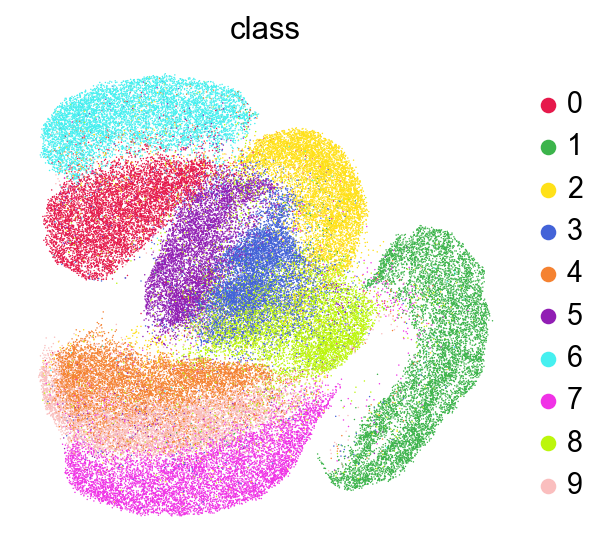
[20]:
import matplotlib.pyplot as plt
import numpy as np
def visualize_mnist_image(image_data):
# Reshape from 784 pixels to 28x28 image
image = image_data.reshape(28, 28)
# Display the image
plt.figure(figsize=(5, 5))
plt.imshow(image, cmap='gray')
plt.axis('off')
plt.title('MNIST Digit')
plt.show()
[21]:
visualize_mnist_image(adata[2].X.toarray())
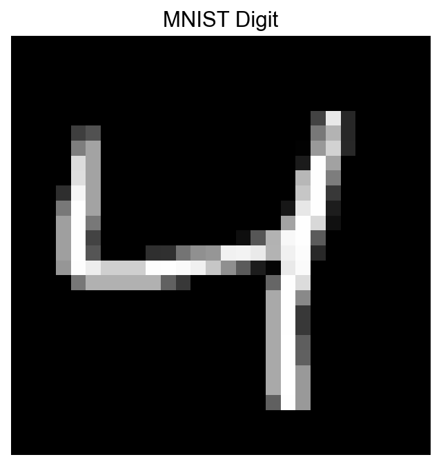
[22]:
visualize_mnist_image(adata[2].layers['infog'].toarray())
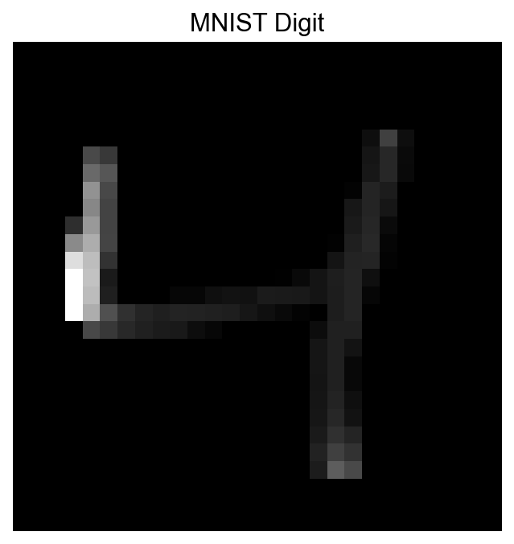
[23]:
visualize_mnist_image(adata[2].layers['raw'].toarray())

[24]:
%%time
sc.tl.leiden(adata,resolution=1,key_added='Leiden')
running Leiden clustering
<timed eval>:1: FutureWarning: In the future, the default backend for leiden will be igraph instead of leidenalg.
To achieve the future defaults please pass: flavor="igraph" and n_iterations=2. directed must also be False to work with igraph's implementation.
finished: found 21 clusters and added
'Leiden', the cluster labels (adata.obs, categorical) (0:01:09)
CPU times: user 1min 9s, sys: 224 ms, total: 1min 9s
Wall time: 1min 9s
[25]:
sc.pl.umap(adata,
color=['Leiden'],
# layer='raw',
palette=piaso.pl.color.d_color3,
# cmap=pos_cmap,
ncols=3,
# size=10,
frameon=False)
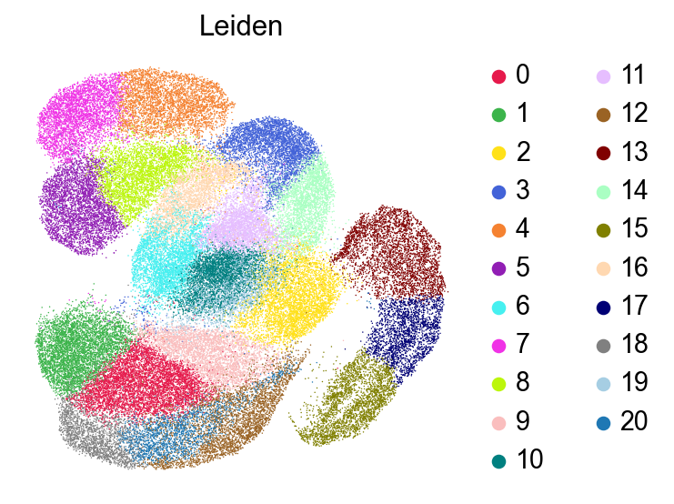
[26]:
sc.pl.umap(adata,
color=['Leiden'],
# layer='raw',
palette=piaso.pl.color.d_color3,
legend_fontsize=7,
legend_fontoutline=2,
legend_loc='on data',
# cmap=pos_cmap,
ncols=3,
# size=10,
frameon=False)
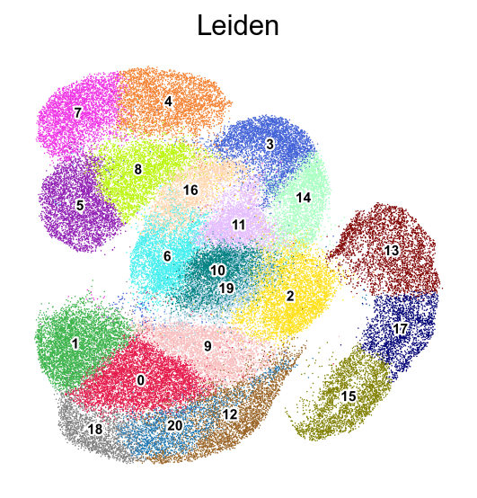
[ ]:
[27]:
sc.pl.umap(adata,
color=['class'],
# layer='raw',
palette=piaso.pl.color.d_color3,
legend_fontsize=7,
legend_fontoutline=2,
legend_loc='on data',
# cmap=pos_cmap,
ncols=3,
# size=10,
frameon=False)
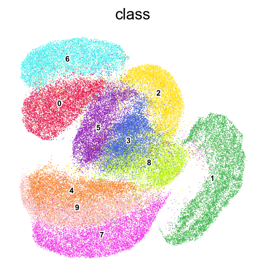
[28]:
def visualize_cluster(X, cluster_labels, cluster_id, num_samples=7):
# Find all samples belonging to the specified cluster
indices = np.where(cluster_labels == cluster_id)[0]
# Select random samples from this cluster (or first few if less than requested)
sample_indices = indices[:min(num_samples, len(indices))]
# Create a figure with subplots
fig, axes = plt.subplots(1, len(sample_indices), figsize=(len(sample_indices)*2, 2))
# Display each sample
for i, idx in enumerate(sample_indices):
ax = axes[i] if len(sample_indices) > 1 else axes
ax.imshow(X[idx].reshape(28, 28), cmap='gray')
ax.set_title(f'Cluster {cluster_id}')
ax.axis('off')
plt.tight_layout()
plt.show()
[34]:
visualize_cluster(adata.X.todense(),
cluster_labels=adata.obs['Leiden'],
cluster_id='1',
num_samples=7)
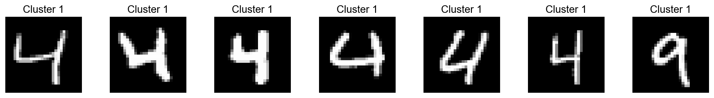
[35]:
visualize_cluster(adata.X.todense(),
cluster_labels=adata.obs['Leiden'],
cluster_id='2')
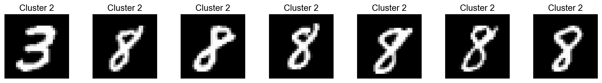
[36]:
visualize_cluster(adata.X.todense(),
cluster_labels=adata.obs['Leiden'],
cluster_id='4')
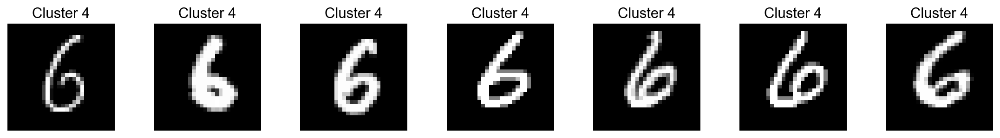
In a supervised way#
[41]:
%%time
piaso.tl.runGDRParallel(
adata,
groupby='class',
resolution=2.0,
n_gene =100,
mu = 10,
layer='raw', infog_layer='raw',
score_layer='raw',
scoring_method='piaso',
random_seed=1927,
use_highly_variable =False,
n_highly_variable_genes = 200,
n_svd_dims =10,
max_workers = 32,
calculate_score_multiBatch=False,
verbosity=0
)
The cell embeddings calculated by GDR were saved as `X_gdr` in adata.obsm.
CPU times: user 474 ms, sys: 246 ms, total: 720 ms
Wall time: 20.5 s
[42]:
adata.obsm['X_umap_gdr']=adata.obsm['X_umap'].copy()
[43]:
%%time
sc.pp.neighbors(adata,
use_rep='X_gdr',
n_neighbors=15,random_state=10,knn=True,
method="umap")
sc.tl.umap(adata)
computing neighbors
finished: added to `.uns['neighbors']`
`.obsp['distances']`, distances for each pair of neighbors
`.obsp['connectivities']`, weighted adjacency matrix (0:00:06)
computing UMAP
finished: added
'X_umap', UMAP coordinates (adata.obsm)
'umap', UMAP parameters (adata.uns) (0:00:31)
CPU times: user 48.7 s, sys: 113 ms, total: 48.8 s
Wall time: 37.9 s
[44]:
sc.pl.umap(adata,
color=['class'],
# layer='raw',
palette=piaso.pl.color.d_color1,
# cmap=pos_cmap,
ncols=3,
# size=10,
frameon=False)
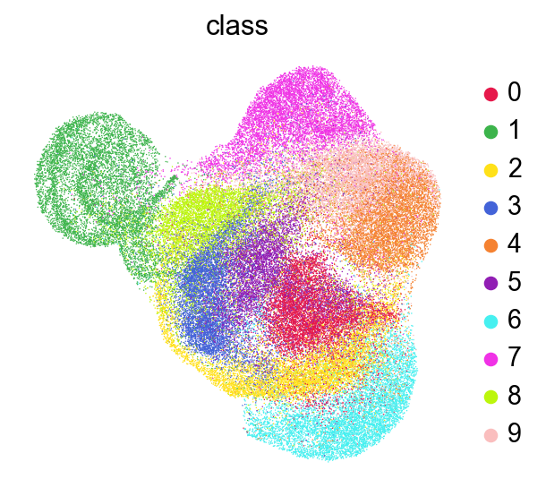
Run Clustering#
[45]:
%%time
sc.tl.leiden(adata,resolution=1,key_added='Leiden')
running Leiden clustering
finished: found 19 clusters and added
'Leiden', the cluster labels (adata.obs, categorical) (0:00:58)
CPU times: user 58.3 s, sys: 189 ms, total: 58.4 s
Wall time: 58.6 s
[46]:
sc.pl.umap(adata,
color=['Leiden'],
# layer='raw',
palette=piaso.pl.color.d_color3,
# cmap=pos_cmap,
ncols=3,
# size=10,
frameon=False)
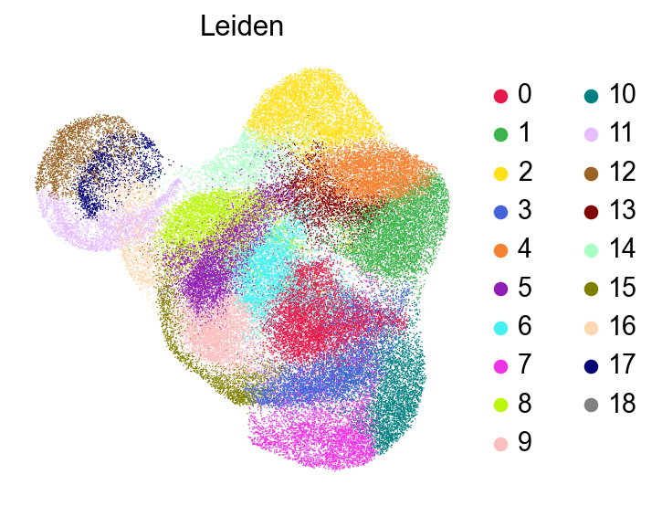
[47]:
sc.pl.umap(adata,
color=['Leiden'],
# layer='raw',
palette=piaso.pl.color.d_color3,
legend_fontsize=7,
legend_fontoutline=2,
legend_loc='on data',
# cmap=pos_cmap,
ncols=3,
# size=10,
frameon=False)
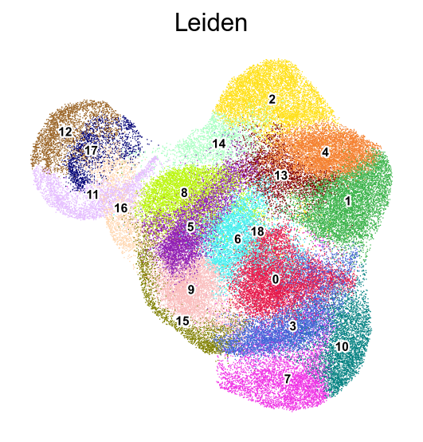
[48]:
sc.pl.umap(adata,
color=['class'],
# layer='raw',
palette=piaso.pl.color.d_color3,
legend_fontsize=7,
legend_fontoutline=2,
legend_loc='on data',
# cmap=pos_cmap,
ncols=3,
# size=10,
frameon=False)
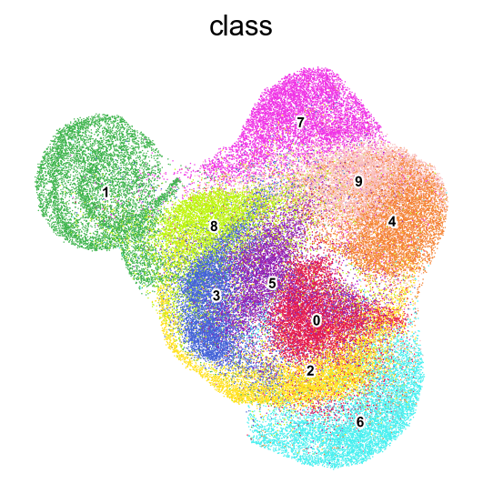
[50]:
visualize_cluster(adata.X.todense(),
cluster_labels=adata.obs['Leiden'],
cluster_id='1',
num_samples=7)
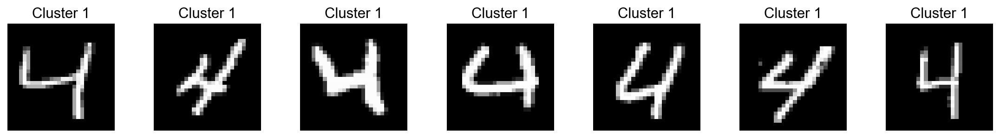
[51]:
visualize_cluster(adata.X.todense(),
cluster_labels=adata.obs['Leiden'],
cluster_id='2')
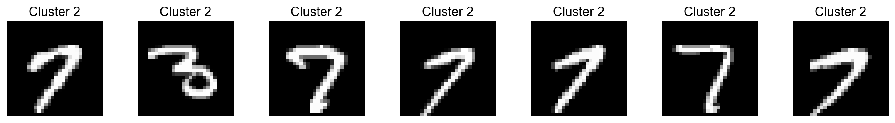
[53]:
visualize_cluster(adata.X.todense(),
cluster_labels=adata.obs['Leiden'],
cluster_id='12')
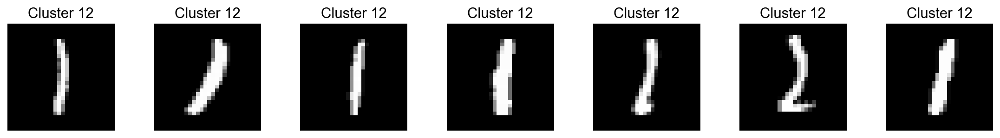
[ ]: